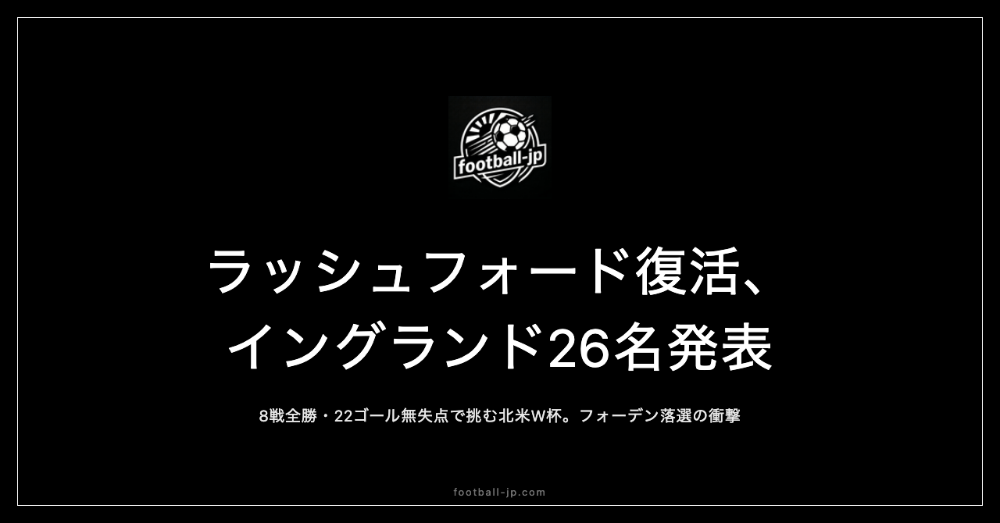

ラッシュフォード復活、イングランド代表26名発表｜8戦全勝22ゴール無失点で挑む北米W杯——フォーデン落選の衝撃
現地時間2026年5月22日、FA（イングランドサッカー協会）がトーマス・トゥヘル監督名義でW杯2026に向けた正式26名を発表した。このリストが公開された瞬間、最初に話題になったのはいなかった選手の名前だった。フィル・フォーデン——マンチェスター・シティのエース、2024年のバロンドール投票で上位に入ったMFの名前が、どこにも見当たらない。コール・パーマーも同様だ。代わりにリストに戻ってきたのは、マーカス・ラッシュフォード（バルセロナ）だった。そして8大会連続17度目の本大会出場という事実と、欧州予選8試合を8勝22ゴール無失点という圧倒的な数字で駆け抜けた実績が、このリストの背景にある。

全体傾向：プレミアリーグ勢が主軸
26名の所属クラブ別リーグ分布は以下の通りだ。
| リーグ | 人数 |
|---|---|
| 🏴 イングランド（プレミアリーグ） | 20名 |
| 🇪🇸 スペイン（ラ・リーガ） | 2名（ベリンガム、ラッシュフォード） |
| 🇩🇪 ドイツ（ブンデスリーガ） | 1名（ケイン） |
| 🇸🇦 サウジアラビア | 1名（トニー） |
| その他欧州 | 2名 |
GK 3人：ピックフォードを中心とした信頼の布陣
GKの主軸はジョーダン・ピックフォード（エバートン🏴）。32歳、2018年ロシア大会から3大会連続のW杯出場となる。2番手のディーン・ヘンダーソン（クリスタル・パレス🏴）は29歳、3番手は21歳のジェームズ・トラフォード（マンチェスター・シティ🏴）で次世代候補として選出されている。
DF 8人：世代交代が進む新体制、マグワイア落選の現実
守備陣で目を引くのは、まずマグワイアの不在だ。2021年EURO、2022年W杯でキャプテンとしてチームを牽引したハリー・マグワイアは今回のリストに入らなかった。トゥヘルは世代交代を選択した。
代わりに軸を担うのは、リース・ジェームス（チェルシー🏴、26歳）。右サイドバックとして攻守両面にわたる活躍はプレミアリーグでも際立っている。ジョン・ストーンズ（マンチェスター・シティ🏴、32歳）はCBとSBの両方をこなせる万能性が代表に必要とされている。
若い世代ではマーク・ゲーイとエズリ・コンサがCBの中心候補として選ばれ、22歳のジャレル・クアンサー（バイエル・レバークーゼン🇩🇪）はブンデスリーガの強豪で経験を積む若手CBだ。
MF：ベリンガム・ライスの軸に経験を補うメイヌー
中盤の核はジュード・ベリンガム（レアル・マドリード🇪🇸）とデクラン・ライス（アーセナル🏴）の二枚。ベリンガムは22歳でレアル・マドリードの主力として欧州のトップシーンを毎シーズン戦っており、今大会のイングランドの攻撃の起点は確実に彼だ。ライスは27歳、アーセナルでのプレミアリーグ優勝に中盤の心臓として貢献したボランチで、守備のカバーエリアの広さとボール奪取能力はイングランド代表で替えの利かない存在だ。
21歳のコビー・メイヌー（マンチェスター・ユナイテッド🏴）は今大会が初のW杯出場となる。エベレチ・エゼ（アーセナル🏴）はテクニカルな動き出しとドリブルが持ち味のアタッカーだ。
FW：ケイン・サカ・ラッシュフォードの三銃士
前線の核はハリー・ケイン（バイエルン・ミュンヘン🇩🇪）。32歳、2025-26シーズンのブンデスリーガで36ゴールを記録し、3年連続の得点王に輝いた。全競技58ゴールという圧倒的な数字を残している。右ウイングのブカヨ・サカ（アーセナル🏴）は24歳、今シーズンのプレミアリーグ制覇の立役者の一人だ。そしてマーカス・ラッシュフォード（FCバルセロナ🇪🇸）——後述するが、この選手の名前がこのリストにある事実が、今大会のイングランドの物語の一つを作っている。
8戦全勝22ゴール無失点——圧倒的な予選突破の記録
今大会のイングランドの欧州予選（UEFAグループK）の成績は、一言で表すなら「圧巻」だった。アルバニア・アンドラ・ラトビア・セルビアとの8試合を通じて8勝22ゴール無失点。グループステージの最終戦を前に、10月14日のラトビア戦（3-0）で2試合を残して突破を確定させた。
特に際立っていたのは「無失点」の部分だ。8試合すべてでゴールを守り切るのは、欧州予選において世界的にも珍しい記録。トゥヘルが就任わずか1年足らずのチームで作り上げた守備組織の完成度がうかがえる。
フォーデン・パーマー落選の衝撃——トゥヘルの選択
発表の瞬間に最も多くの反応を集めたのは、フィル・フォーデンとコール・パーマーの落選だった。フォーデンは2025-26シーズンのマンチェスター・シティで7ゴール5アシストという数字を残したが、かつてバロンドール候補にまで上り詰めた2023-24シーズンの輝きと比べると「控えめ」という評価を免れなかった。パーマーは鼠径部の怪我がコンディションに影響し続けた。
トゥヘルはフォーデンに「今シーズンの彼のパフォーマンスが私たちの要求水準に達しなかった」と淡々と述べている。この判断が正しかったかどうかは、6月以降に結果として検証されることになる。
ラッシュフォード復活の物語——バルセロナが変えた1年
マーカス・ラッシュフォードの物語は、2025年1月から始まる。マンチェスター・ユナイテッドでスウン・アモリム監督と確執を深めたラッシュフォードは、その冬の移籍市場でアストン・ヴィラへのローン移籍を決断した。17試合4ゴール5アシストという成果を残し、「やはりこの選手には力がある」という証明をした。
そして2025年7月、バルセロナが動く。ラッシュフォードは48試合14ゴール14アシストという結果を残した。ハンジ・フリック監督が組むバルセロナの流動的な攻撃システムに溶け込み、ユナイテッド時代の彼とは異なる成熟を感じさせた。「環境が選手を変える」というフットボールの本質的な命題を、ラッシュフォードは28歳のタイミングで体現している。1966年の優勝以来60年ぶりの大舞台で、バルセロナ仕込みの技術と自信を携えて戻ってきた28歳——その存在がイングランドの攻撃に何をもたらすかが今大会の見どころの一つだ。
グループL：クロアチア・ガーナ・パナマとの3戦
イングランドが臨むグループLはクロアチア、ガーナ、パナマとの3試合だ。
- 第1戦：6月17日（水）対クロアチア 会場：ダラス（米国）
- 第2戦：6月23日（火）対パナマ 会場：ボストン（米国）
- 第3戦：6月27日（土）対ガーナ 会場：ニュージャージー（米国）
クロアチアはモドリッチ引退後も組織的な守備とカウンターの鋭さは健在で、グループLでの最も慎重に臨むべき相手になる。8戦全勝・無失点という予選の成績を踏まえれば、グループ突破は現実的な目標だ。1966年以来60年ぶりの優勝へ——8戦全勝22ゴール無失点のイングランドが、北米の大地に乗り込む。